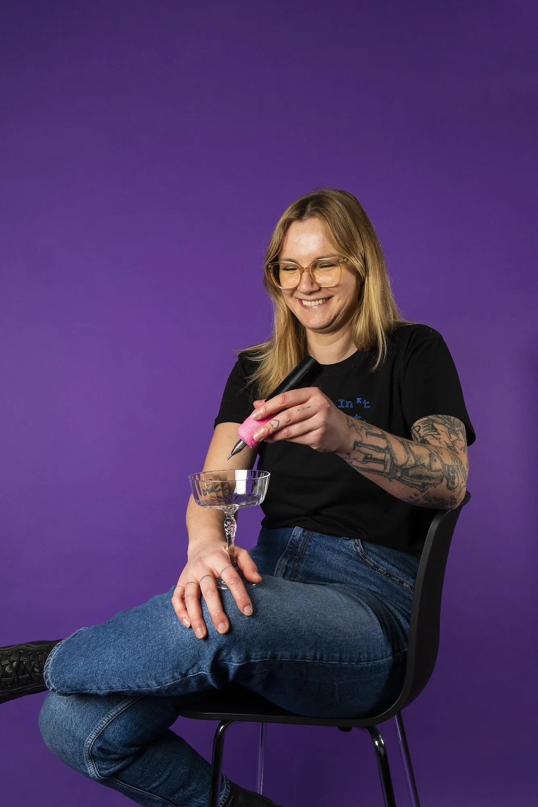
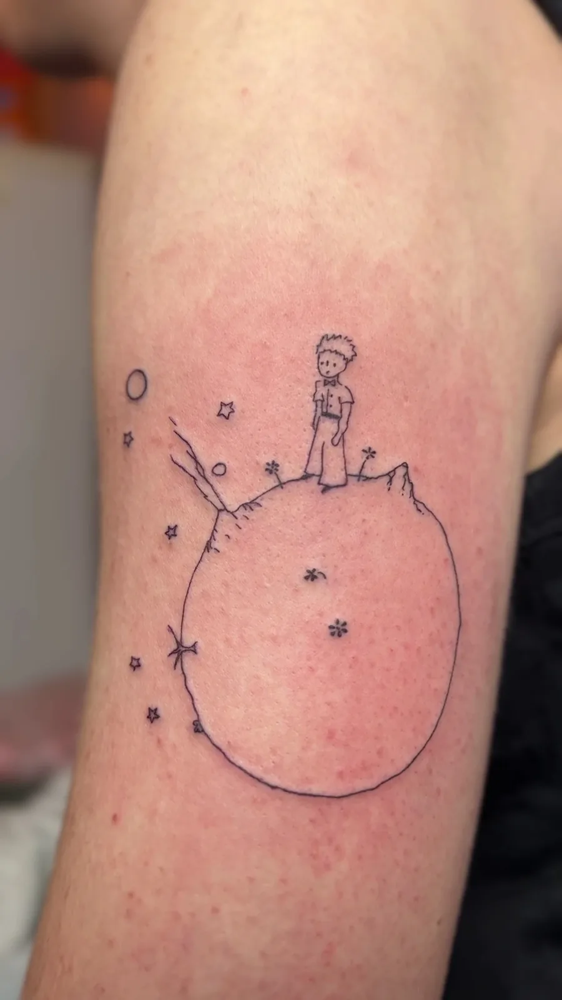
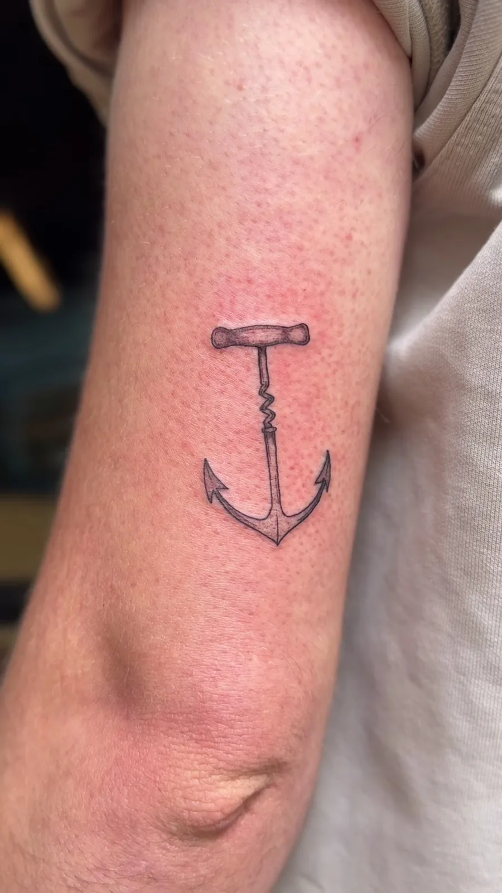
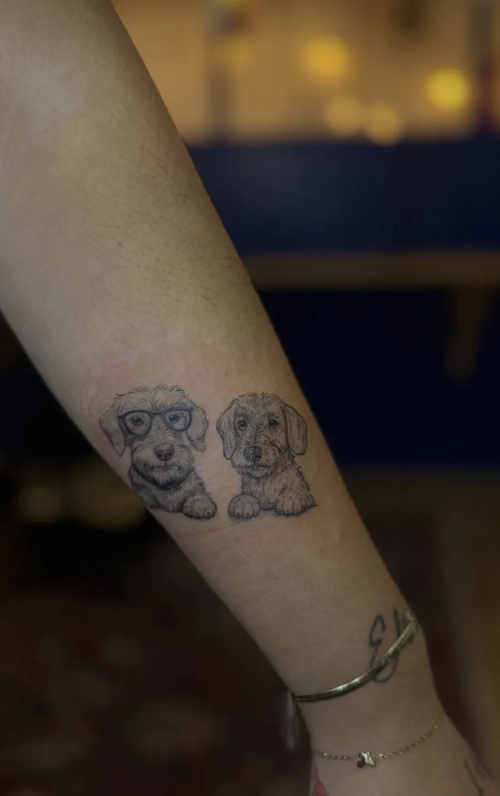
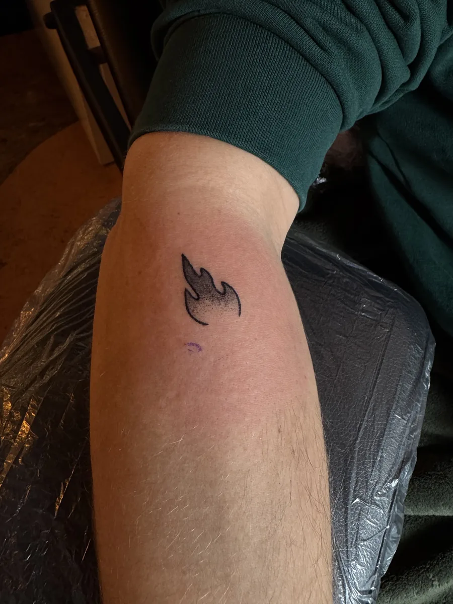
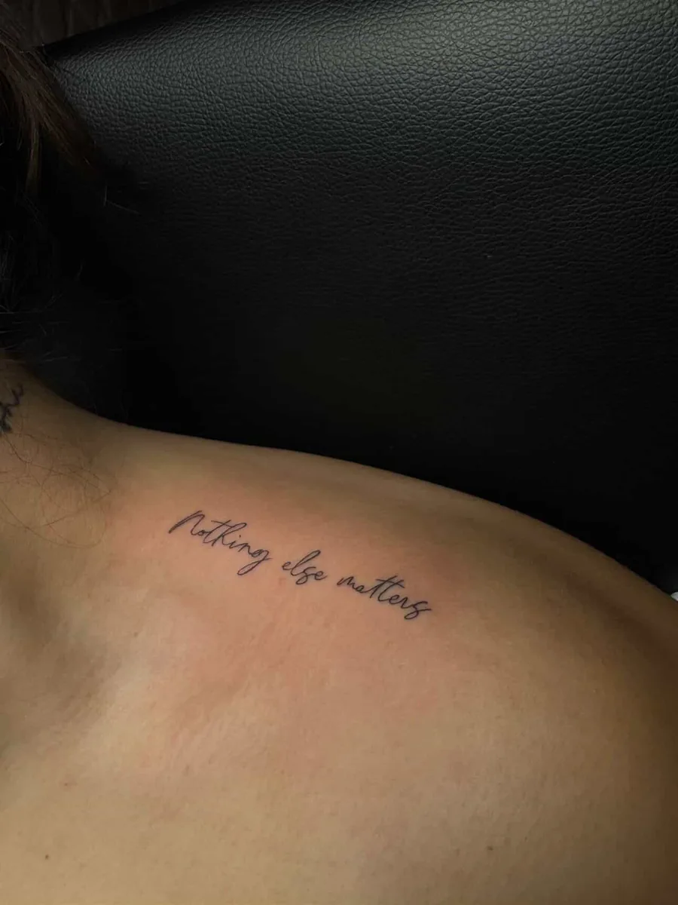
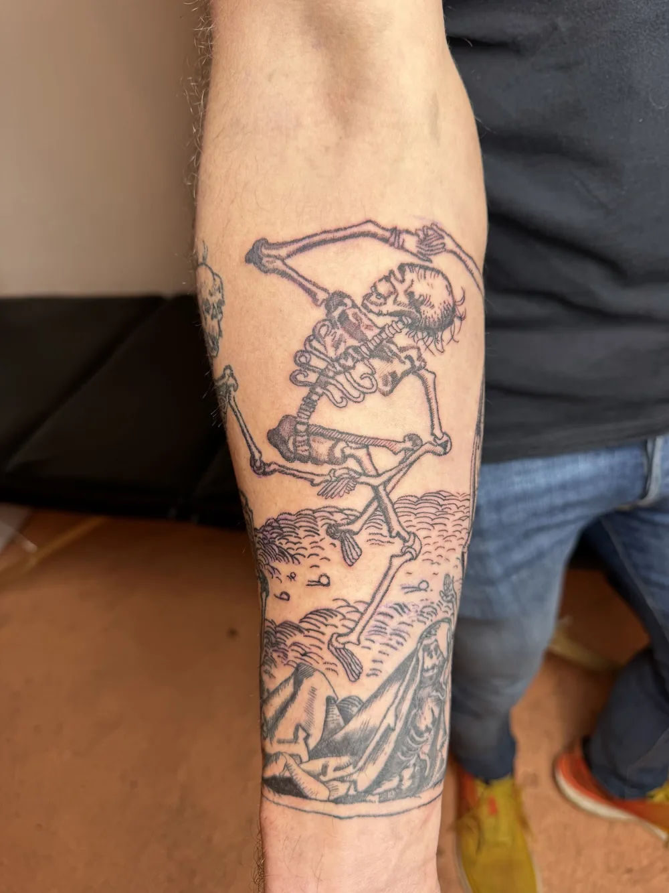
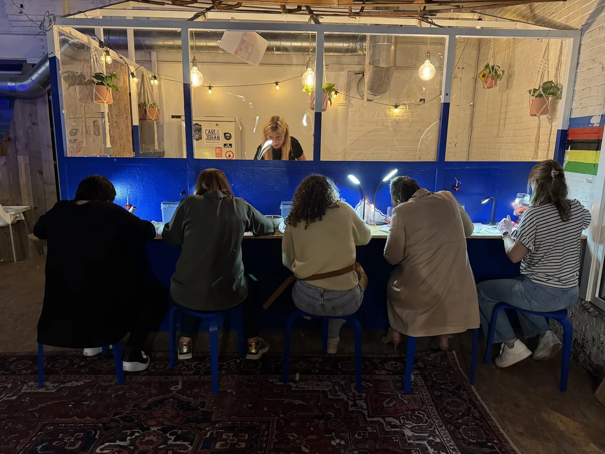
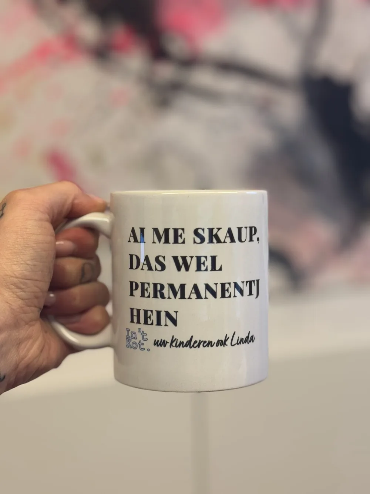
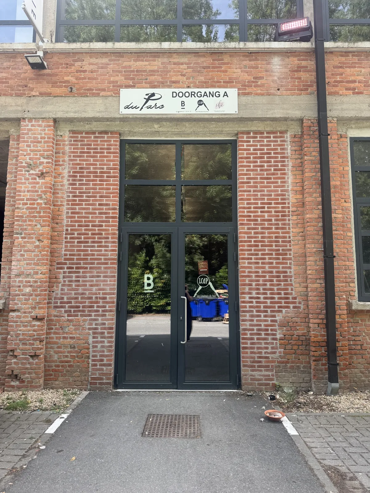

Inkt, kunst en gezelligheid in één KOT.
Dé plek voor kleine, minimalistische tattoos én het unieke concept INK & DRINK, waar je zelf leert tatoeëren op oefenhuid.
Klein, fijn en voor altijd.
Fineline, kleine symbolen, een lijntje tekst of iets grappigs. We tekenen het samen met jou uit tot het klopt.






Werk van het INkT KOT-team. Elke artiest toont meer op haar eigen Instagram.
INK & DRINKZelf tatoeëren.
Je neemt een tattoomachine vast en zet je eerste lijnen op oefenhuid, met een drankje erbij. Geen opleiding, wel pure fun.
Kom met twee tot vijf personen. En we komen ook naar evenementen.

INK & DRINK
Prijs per groep
- 2 personen€ 150
- 3 personen€ 225
- 4 personen€ 300
- 5 personen€ 375
Echte tattoomachine, oefenhuid, en een drankje erbij.
Plan je sessieVijf artiesten, één kot.
Iedereen met een eigen stijl en een eigen agenda. Kies wie bij jouw idee past, of vraag ons gerust wie je het best helpt.
- 01Loulou
Loulou stelt je meteen op je gemak, neemt haar tijd en zorgt voor een mooi afgewerkte tattoo!
Jasmien, Salonized - 02DorienArtiest bij INkT KOTBoeken via Salonized
- 03Femke
Femke neemt echt haar tijd om het ontwerp volledig naar jouw wens om te zetten.
Luna, Salonized - 04BrittArtiest bij INkT KOTBoeken via Salonized
- 05ImaniArtiest bij INkT KOTBoeken via Salonized

Wat je vooraf weet.
Een goed ontwerp begint met een babbel. "Er werd goed geluisterd naar mijn wensen en er was ruimte om samen na te denken over het ontwerp", schreef Jasper op Salonized.
Kom naar het kot.
Adres
Erembodegemstraat 31 bus 18
9300 Aalst
Afspraken
Enkel op afspraak, je kiest je moment op Salonized
